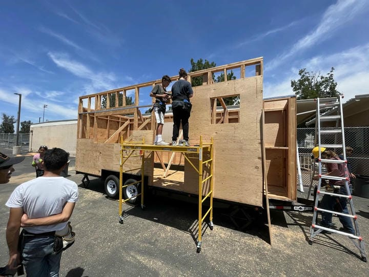
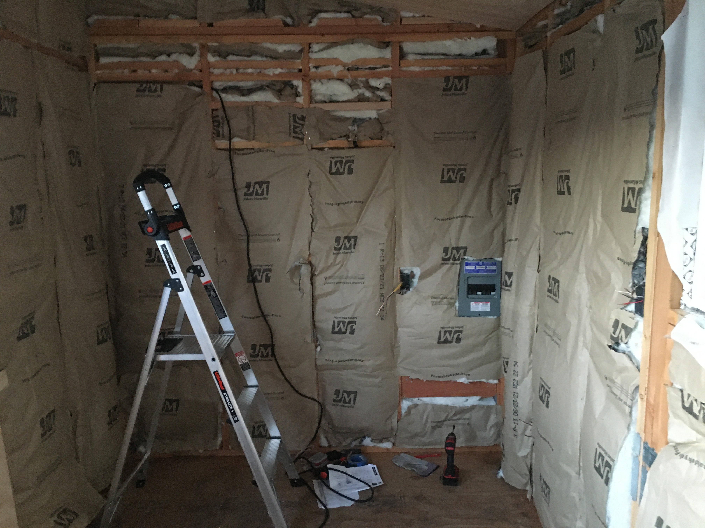
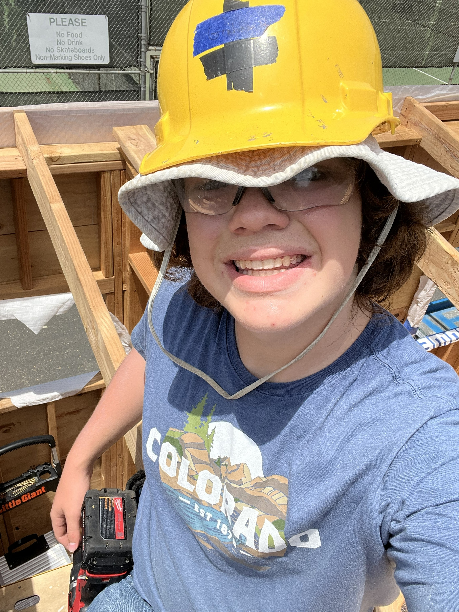
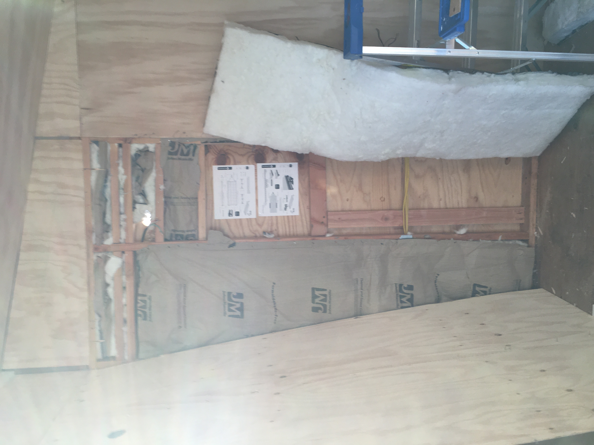
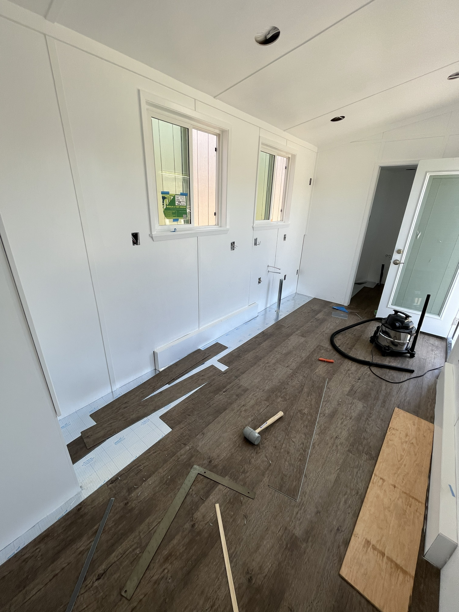
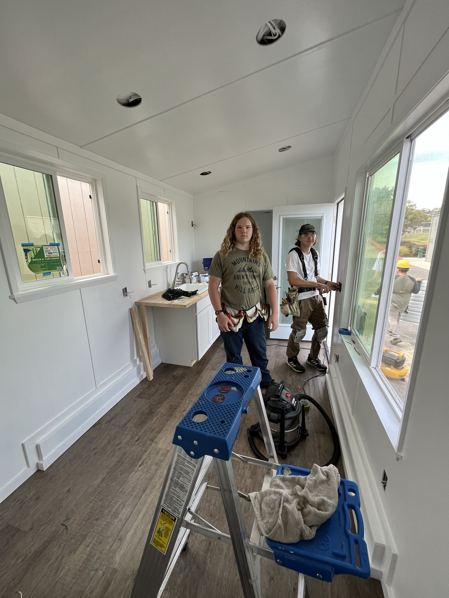

Tiny House Construction (Winter 2022 - Summer 2023)


Project Overview
During a Career and Technical Education (CTE) after-school program at my high school, I gained hands-on experience with numerous aspects of residential construction.
- Rough Framing with screws
- Weatherproofing (tyvek, flashing)
- Plumbing installation (PEX plastic and PVC drainage)
- Electrical wiring for outlets and light switches
- Installing fiberglass insulation
- Finish carpentry (baseboards, interior trim)
- Vinyl flooring installation
- Appliance installation (water heater, sink, toilet, shower)
I personally worked on the interior of one tiny house, and the exterior of another due to the timing of the program, and used numerous tools including the miter saw, skilsaw, belt sander, and power drill in order to complete my tasks.
Visit the project website!
Reflection
This project gave me foundational experience in residential construction and taught me how to work safely, efficiently, and collaboratively on a long term build. It also strengthened my confidence with power tools and reinforced the importance of precision and planning in structural work.
Tiny House Photo Gallery




